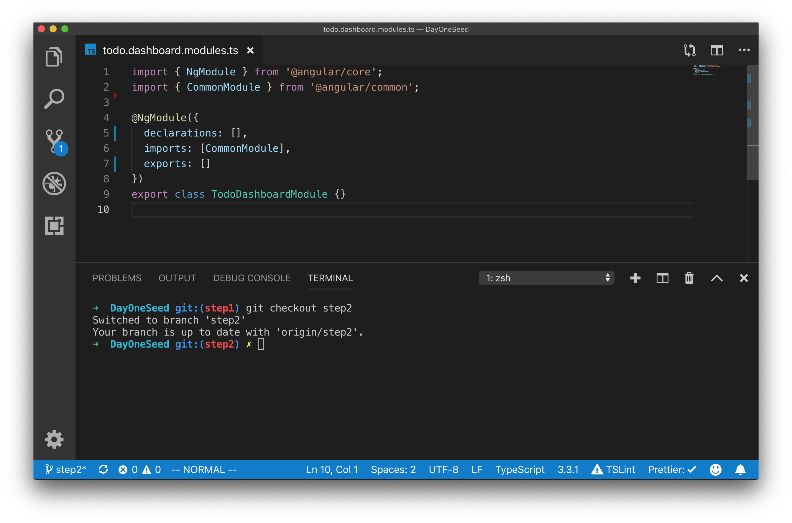
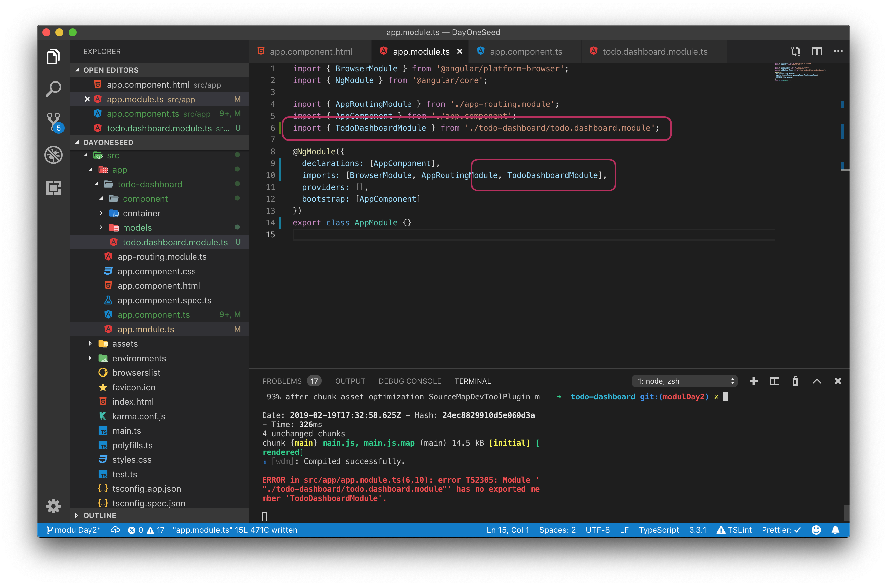

Feature Modules
Feature modules adalah sebuah module yang berisi component component yang dibutuhkan untuk menyelesaikan suatu tugas atau suatu fitur. Pada percobaaan kali ini setelah anda berhasil memetakan mana yang menjadi Container Component dan mana yang menjadi Presentational Component akan dilanjutkan dengan membuat sebuah feature modules untuk TodoComponent, AddTodoComponent, TodoCountComponent, dan TodoItemComponent dalam sebuah Module TodoDashboard.
A feature module is an organizational best practice, as opposed to a concept of the core Angular API. A feature module delivers a cohesive set of functionality focused on a specific application need such as a user workflow, routing, or forms. While you can do everything within the root module, feature modules help you partition the app into focused areas. A feature module collaborates with the root module and with other modules through the services it provides and the components, directives, and pipes that it shares.
Langkah Percobaan
Clone lah repositori berikut ini dari github https://github.com/siubie/DayOneSeed.git kemudian bukalah menggunakan visual studio code dan switch dari branch master ke branch step1 setelah berhasil mengganti branch jalankan server angular dengan perintah ng serve pastikan aplikasi todo yang ada sekarang berjalan dengan baik.


Branch Step 1 adalah branch yang berisi finished code dari latihan sebelumnya. Pada branch ini sudah berhasil dibuat sebuah aplikasi todo list sederhana dengan fitur add dan toggle finished. Namun pada branch ini masih belum menggunakan konsep pengembangan yang berbasis component dengan baik karena semua kode program di buat di file app.component.ts dan app.component.html.
Pada percobaan ini kita akan membuat sebuah feature module yang bertugas menangani fitur Todo yang ada pada branch Step 1, pada module ini akan di isi dengan container component dan presentational component yang telah di analisa pada modul sebelumnya.
Untuk melaksanakan percobaan ini pastikan bahwa branch yang anda gunakan sekaraang adalah branch step1, cara melakukan pengecekan dengan menjalankan perintah berikut ini pada terminal di folder project anda. (pastikan git sudah terinstall pada sistem operasi anda).
git branch

Hasil perintah git branch dapat anda lihat pada gambar dibawah ini :

Current branch dapat anda lihat dengan mengecek tanda asterisk * pada hasil terminal jika berdasarkan gambar diatas branch masih berada pada branch master, untuk itu anda perlu melakukan perubahan untuk pindah ke branch step1 dengan perintah berikut ini.

Buat Folder Container, Component dan Models
Setelah berhasil pindah ke branch step1 mari kita lanjutkan dengan membuat sebuah feature module yang bernama todo-dashboard, untuk membuatnya mulailah dengan menambahkan folder baru bernama todo-dashboard pada folder app setelah itu tambahkan tiga folder lagi yaitu folder containers, component dan models berikut ini folder tree yang harus dibuat :

├── todo-dashboard
│ ├── component
│ ├── container
│ └── models
Pindahkan File todo.model.ts
Setelah berhasil membuat folder lanjutkan dengan memindahkan file todo.model.ts dari folder app ke folder app/todo-dashboard/model, ini dilakukan agar semua file yang berhubungan dengan fitur todo berada dalam satu folder.

.
├── component
├── container
└── models
└── todo.model.ts
Buat Feature Module
Mari dilanjutkan dengan menambahkan sebuah file baru bernama todo.dashboard.module.ts, Langkah pembuatan module ini sama degnan langkah pada modul sebelumnya, untuk lebih memahami prosesnya mari kita ulang kembali prosesnya.
Setiap module pada file module angular membutuhkan library dari @angular/core yaitu library ngModule yang merupakan decorator yang membedakan antara module dengan component dan file lain. Untuk itu pada file todo.dashboard.module.ts tambahkanlah statement import berikut ini.
import { NgModule } from "@angular/core";
Selain itu include can juga library CommonModule dari @angular/common
import { CommonModule } from "@angular/common";
Setelah menambahkan ngModule dan CommonModule kita dapat menggunakan decorator @ngModule dan mengimport CommonModule ke Class TodoDashboardModule.
import { NgModule } from "@angular/core";
import { CommonModule } from "@angular/common";
@NgModule({
declarations: [],
imports: [CommonModule],
exports: []
})
export class TodoDashboardModule {}
Berikut ini hasil kode program todo.dashboard.module

Yang barusaja anda buat adalah sebuah template module pada angular dengan library minimal dimana pada module ini nanti akan ditambahkan beberapa component dan container yang digunakan pada module ini.
Selanjutnya agar TodoDashboardModule yang kita buat dapat digunakan di root module (AppModule), TodoDashboardModule harus di import sebagai sebuah module baru di file app.module.ts. Ubahlah kode program pada file app.module.ts menjadi seperti pada gambar dibawah ini.
import { BrowserModule } from "@angular/platform-browser";
import { NgModule } from "@angular/core";
import { AppRoutingModule } from "./app-routing.module";
import { AppComponent } from "./app.component";
import { TodoDashboardModule } from "./todo-dashboard/todo.dashboard.module";
@NgModule({
declarations: [AppComponent],
imports: [BrowserModule, AppRoutingModule, TodoDashboardModule],
providers: [],
bootstrap: [AppComponent]
})
export class AppModule {}

Setelah melakukan import TodoDashboardModule compiler angular akan memberikan error bahwa TodoDashboardModule tidak memiliki "exported member", hal ini wajar karena kita akan menambahkan membuat container component dan meng export nya di langkah selanjutnya.